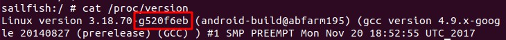
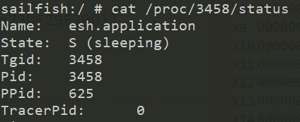

老早就想用改源码的方式绕过 tracepid 这类反调试检测，以前试过 patch boot.img 也没成功，凑巧最近编译 aosp 源码做脱壳机，就顺便把内核也改掉。主要参考这篇文章：
native层安卓_来自高纬的对抗：定制安卓内核过反调试
编译环境
设备：Pixel
系统：Android 8.1.0
架构：arm64-v8a
编译机：Ubuntu 18
编译内核源码
下载内核源码
1
2
| $ git clone https://aosp.tuna.tsinghua.edu.cn/android/kernel/msm.git
$ cd msm
|
手机 adb shell 执行 cat /proc/version 查看内核版本

检出对应版本代码
准备编译环境变量，编译工具链在 aosp 源码中有，如果之前同步过 aosp ，那么这里直接用就行
1
2
3
| $ export PATH=$PATH:/home/<user>/Downloads/aosp/prebuilts/gcc/linux-x86/aarch64/aarch64-linux-android-4.9/bin
$ export ARCH=arm64
$ export CROSS_COMPILE=aarch64-linux-android-
|
开始编译，这一步生成 dtb 文件
1
2
| $ make marlin_defconfig
$ make
|
接下来这一步生成 boot.img 文件
1
2
3
| # 进入aosp源码目录，执行这两条命令
$ export TARGET_PREBUILT_KERNEL=/home/<user>/Downloads/kernel/msm/arch/arm64/boot/Image.lz4-dtb
$ make bootimage
|
img 文件在 aosp 的 out/target/product/sailfish ，进入该目录执行
fastboot flash boot boot.img
修改内核绕过tracerpid检测
第一处修改
1
2
3
4
5
6
7
8
9
10
11
12
13
14
15
16
| diff --git a/fs/proc/base.c b/fs/proc/base.c
index 7eb754c85482..481f8ee12b52 100644
--- a/fs/proc/base.c
+++ b/fs/proc/base.c
@@ -245,7 +245,13 @@ static int proc_pid_wchan(struct seq_file *m, struct pid_namespace *ns,
else
return seq_printf(m, "%lu", wchan);
else
+ {
+ if (strstr(symname, "trace"))
+ {
+ return seq_printf(m, "%s", "sys_epoll_wait");
+ }
return seq_printf(m, "%s", symname);
+ }
}
|
接下来两处修改
1
2
3
4
5
6
7
8
9
10
11
12
13
14
15
16
17
18
19
20
21
22
23
24
25
26
27
| diff --git a/fs/proc/array.c b/fs/proc/array.c
index 5699b3c76d6f..a6dfe36f5621 100644
--- a/fs/proc/array.c
+++ b/fs/proc/array.c
@@ -136,10 +136,10 @@ static const char * const task_state_array[] = {
"R (running)",
"S (sleeping)",
"D (disk sleep)",
- "T (stopped)",
- "t (tracing stop)",
+ "S (sleeping)",
+ "S (sleeping)",
"X (dead)",
- "Z (zombie)",
+ "S (sleeping)",
};
@@ -183,7 +183,7 @@ static inline void task_state(struct seq_file *m, struct pid_namespace *ns,
get_task_state(p),
leader ? task_pid_nr_ns(leader, ns) : 0,
pid_nr_ns(pid, ns),
- ppid, tpid,
+ ppid, 0,
from_kuid_munged(user_ns, cred->uid),
from_kuid_munged(user_ns, cred->euid),
from_kuid_munged(user_ns, cred->suid),
|
修改后重新编译刷入手机
TracerPid 恒为 0 ，State 是 sleeping

结束
这种方式只能过掉部分反调试，对于像是双进程 ptrace ，时间检测，信号反调试这种还得特殊处理。